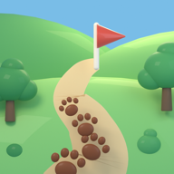

Pathkins
Privacy Policy
Pathkins is a walking game made by Nesim Razon, an individual developer. This page explains what data the app reads, where it stays and which services receive other data.
1. In short
- Your step, distance and walk session data is read from Health Connect and stays on your phone. It is never uploaded, shared, sold or used for advertising or measurement.
- The app has no account and I run no server that receives your data.
- Google services are used for ads, app usage measurement and crash reports. They never receive your walking data or anything derived from it.
2. Health Connect data
With your permission Pathkins reads three kinds of data from Health Connect: steps, walking distance and exercise (walk) sessions. It does not write to Health Connect and does not read location, route, heart rate, sleep or calories. It reads only while the app is open; it has no background health access.
The data is used only to move your companion along the trail, to set your personal daily goals, to give badges and to show your own history. Pathkins keeps daily summaries (for example the step total of a day) in a file in the app's private storage on your phone.
The use of information received from Health Connect adheres to the Health Connect Permissions policy, including the Limited Use requirements.
3. Your control
You can revoke the permissions at any time in Health Connect. Settings > Reset the game deletes your progress and history from the app; uninstalling the app deletes everything it stored. Health Connect itself keeps its own data, which you manage there.
4. Home screen widget and reminder
The optional widget shows your step count of today on your own home screen. The optional evening reminder is created by your phone; it contains no step numbers and sends nothing to any server.
5. Usage measurement and crash reports
The app uses Google Firebase Analytics and Crashlytics. They collect app usage such as app opens, which camp mini game was opened or won, taps on the other games list and ad events, together with technical information (device model, Android version, app version, language, approximate region derived from the IP address, an app instance identifier) and crash details. No step, distance, goal, badge or history information is included. The advertising ID is not collected for analytics.
See Firebase privacy and security.
6. Ads
Pathkins is free and shows ads from Google AdMob: at most one full screen ad a day, only after you finish a camp mini game. AdMob may use your device's advertising ID, IP address and device information to deliver and measure ads. Your walking data is never given to AdMob.
In the European Economic Area, the United Kingdom and Switzerland you are asked for consent first and can change your choice under Settings > Ad choices. You can also reset or delete the advertising ID in Android settings. See Google's privacy policy.
7. Purchases
The optional "Remove ads" purchase is processed by Google Play. I do not receive your payment details.
8. Other games list
The "More games" page downloads a small list and icons from nesimapps.com. No personal data is sent; the web host sees the usual technical request information such as the IP address.
9. Children
Pathkins is not directed at children under 13.
10. Changes and contact
If this policy changes, the new version is published on this page. Questions and requests: nesim.razon@gmail.com.
Gizlilik Politikası
Pathkins, bireysel geliştirici Nesim Razon tarafından yapılan bir yürüyüş oyunudur. Bu sayfa uygulamanın hangi veriyi okuduğunu, verinin nerede kaldığını ve hangi hizmetlere başka hangi verilerin gittiğini anlatır.
1. Kısaca
- Adım, mesafe ve yürüyüş etkinliği verin Health Connect'ten okunur ve telefonunda kalır. Sunucuya gönderilmez, paylaşılmaz, satılmaz, reklam ya da ölçüm için kullanılmaz.
- Uygulamada hesap yoktur ve verilerini alan bir sunucum yoktur.
- Reklam, kullanım ölçümü ve çökme raporu için Google hizmetleri kullanılır. Yürüyüş verin ve ondan türetilen hiçbir bilgi onlara gitmez.
2. Health Connect verileri
İznin olursa Pathkins, Health Connect'ten üç tür veri okur: adım, yürüme mesafesi ve egzersiz (yürüyüş) oturumları. Health Connect'e veri yazmaz; konum, rota, nabız, uyku ya da kalori okumaz. Yalnız uygulama açıkken okur; arka planda sağlık verisi erişimi yoktur.
Veri yalnız yoldaşını yolda ilerletmek, kişisel günlük hedeflerini belirlemek, rozet vermek ve kendi geçmişini göstermek için kullanılır. Pathkins günlük özetleri (örneğin bir günün adım toplamı) telefonunda uygulamanın özel alanındaki bir dosyada tutar.
Health Connect'ten alınan bilgilerin kullanımı, Sınırlı Kullanım şartları dahil Health Connect İzinleri politikasına uyar.
3. Senin kontrolün
İzinleri istediğin zaman Health Connect'ten geri alabilirsin. Ayarlar > Oyunu sıfırla ilerlemeni ve geçmişini uygulamadan siler; uygulamayı kaldırmak sakladığı her şeyi siler. Health Connect kendi verisini ayrıca tutar; onu oradan yönetirsin.
4. Ana ekran widget'ı ve hatırlatma
İsteğe bağlı widget bugünkü adım sayını kendi ana ekranında gösterir. İsteğe bağlı akşam hatırlatmasını telefonun oluşturur; içinde adım sayısı yoktur ve hiçbir sunucuya bir şey göndermez.
5. Kullanım ölçümü ve çökme raporları
Uygulama Google Firebase Analytics ve Crashlytics kullanır. Uygulamanın açılması, hangi kamp oyununun açıldığı ya da kazanıldığı, diğer oyunlar listesine dokunmalar ve reklam olayları gibi kullanım bilgileri; teknik bilgiler (cihaz modeli, Android sürümü, uygulama sürümü, dil, IP adresinden çıkarılan yaklaşık bölge, uygulama örneği kimliği) ve çökme ayrıntıları toplanır. Adım, mesafe, hedef, rozet ya da geçmiş bilgisi bunlara dahil değildir. Analytics için reklam kimliği toplanmaz.
Ayrıntı: Firebase gizlilik ve güvenlik.
6. Reklamlar
Pathkins ücretsizdir ve Google AdMob reklamı gösterir: günde en çok bir tam ekran reklam, yalnız bir kamp oyununu bitirdikten sonra. AdMob reklam sunmak ve ölçmek için cihazının reklam kimliğini, IP adresini ve cihaz bilgisini kullanabilir. Yürüyüş verin AdMob'a hiçbir zaman verilmez.
Avrupa Ekonomik Alanı, Birleşik Krallık ve İsviçre'de önce onayın istenir; seçimini Ayarlar > Reklam seçenekleri bölümünden değiştirebilirsin. Android ayarlarından reklam kimliğini sıfırlayabilir ya da silebilirsin. Ayrıntı: Google gizlilik politikası.
7. Satın alma
İsteğe bağlı "Reklamları kaldır" satın alması Google Play tarafından işlenir. Ödeme bilgilerini ben görmem.
8. Diğer oyunlar listesi
"Diğer oyunlarım" sayfası nesimapps.com'dan küçük bir liste ve ikonlar indirir. Kişisel veri gönderilmez; web sunucusu IP adresi gibi olağan istek bilgilerini görür.
9. Çocuklar
Pathkins 13 yaşından küçük çocuklara yönelik değildir.
10. Değişiklikler ve iletişim
Bu politika değişirse yeni sürüm bu sayfada yayımlanır. Soru ve istekler: nesim.razon@gmail.com.
Política de privacidad
Pathkins es un juego de caminar creado por Nesim Razon, desarrollador individual. Esta página explica qué datos lee la app, dónde se quedan y qué servicios reciben otros datos.
1. En resumen
- Tus datos de pasos, distancia y caminatas se leen de Health Connect y se quedan en tu teléfono. Nunca se suben, comparten, venden ni se usan para publicidad o medición.
- La app no tiene cuentas y no tengo ningún servidor que reciba tus datos.
- Usa servicios de Google para anuncios, medición de uso e informes de fallos. Nunca reciben tus datos de caminata ni nada derivado de ellos.
2. Datos de Health Connect
Con tu permiso, Pathkins lee tres tipos de datos de Health Connect: pasos, distancia caminada y sesiones de ejercicio (caminatas). No escribe en Health Connect y no lee ubicación, ruta, frecuencia cardíaca, sueño ni calorías. Solo lee mientras la app está abierta; no tiene acceso en segundo plano.
Los datos se usan solo para que tu compañero avance por el sendero, para fijar tus metas diarias personales, dar insignias y mostrarte tu propio historial. Pathkins guarda resúmenes diarios (por ejemplo, el total de pasos de un día) en un archivo del almacenamiento privado de la app en tu teléfono.
El uso de la información recibida de Health Connect cumple la política de permisos de Health Connect, incluidos los requisitos de uso limitado.
3. Tu control
Puedes retirar los permisos cuando quieras en Health Connect. Ajustes > Reiniciar el juego borra tu progreso e historial de la app; desinstalarla borra todo lo que guardó. Health Connect conserva sus propios datos, que gestionas allí.
4. Widget y recordatorio
El widget opcional muestra los pasos de hoy en tu propia pantalla de inicio. El recordatorio opcional lo crea tu teléfono; no incluye cifras de pasos y no envía nada a ningún servidor.
5. Medición de uso e informes de fallos
La app usa Google Firebase Analytics y Crashlytics. Recogen el uso de la app (aperturas, qué minijuego del campamento se abrió o ganó, toques en la lista de otros juegos y eventos de anuncios), información técnica (modelo del dispositivo, versión de Android y de la app, idioma, región aproximada a partir de la IP, identificador de instancia de la app) y detalles de los fallos. No incluyen pasos, distancia, metas, insignias ni historial. No se recoge el ID de publicidad para la analítica.
Más información: privacidad y seguridad de Firebase.
6. Anuncios
Pathkins es gratuito y muestra anuncios de Google AdMob: como máximo un anuncio a pantalla completa al día, solo después de terminar un minijuego del campamento. AdMob puede usar el ID de publicidad, la dirección IP y datos del dispositivo para mostrar y medir anuncios. Tus datos de caminata nunca se entregan a AdMob.
En el Espacio Económico Europeo, el Reino Unido y Suiza se pide primero tu consentimiento y puedes cambiarlo en Ajustes > Opciones de anuncios. También puedes restablecer o borrar el ID de publicidad en los ajustes de Android. Más información: política de privacidad de Google.
7. Compras
La compra opcional "Quitar anuncios" la procesa Google Play. No recibo tus datos de pago.
8. Lista de otros juegos
La página "Más juegos" descarga una pequeña lista e iconos de nesimapps.com. No se envían datos personales; el servidor web ve la información técnica habitual de la petición, como la dirección IP.
9. Menores
Pathkins no está dirigido a menores de 13 años.
10. Cambios y contacto
Si esta política cambia, la nueva versión se publica en esta página. Preguntas y solicitudes: nesim.razon@gmail.com.
Política de Privacidade
Pathkins é um jogo de caminhada criado por Nesim Razon, desenvolvedor individual. Esta página explica quais dados o app lê, onde eles ficam e quais serviços recebem outros dados.
1. Resumo
- Seus dados de passos, distância e caminhadas são lidos do Health Connect e ficam no seu telefone. Nunca são enviados, compartilhados, vendidos nem usados para publicidade ou medição.
- O app não tem contas e não tenho nenhum servidor que receba seus dados.
- Usa serviços do Google para anúncios, medição de uso e relatórios de falhas. Eles nunca recebem seus dados de caminhada nem nada derivado deles.
2. Dados do Health Connect
Com a sua permissão, o Pathkins lê três tipos de dados do Health Connect: passos, distância caminhada e sessões de exercício (caminhadas). Não grava no Health Connect e não lê localização, rota, frequência cardíaca, sono nem calorias. Só lê com o app aberto; não há acesso em segundo plano.
Os dados são usados apenas para o seu companheiro avançar na trilha, para definir suas metas diárias pessoais, dar medalhas e mostrar o seu próprio histórico. O Pathkins guarda resumos diários (por exemplo, o total de passos de um dia) em um arquivo no armazenamento privado do app no seu telefone.
O uso das informações recebidas do Health Connect segue a política de permissões do Health Connect, incluindo os requisitos de uso limitado.
3. Seu controle
Você pode remover as permissões quando quiser no Health Connect. Ajustes > Reiniciar o jogo apaga seu progresso e histórico do app; desinstalar apaga tudo o que ele guardou. O Health Connect mantém os próprios dados, que você gerencia lá.
4. Widget e lembrete
O widget opcional mostra os passos de hoje na sua própria tela inicial. O lembrete opcional é criado pelo seu telefone; não traz números de passos e não envia nada a nenhum servidor.
5. Medição de uso e relatórios de falhas
O app usa Google Firebase Analytics e Crashlytics. Eles coletam o uso do app (aberturas, qual minijogo do acampamento foi aberto ou vencido, toques na lista de outros jogos e eventos de anúncios), informações técnicas (modelo do aparelho, versão do Android e do app, idioma, região aproximada a partir do IP, identificador de instância do app) e detalhes das falhas. Não incluem passos, distância, metas, medalhas nem histórico. O ID de publicidade não é coletado para a análise.
Saiba mais: privacidade e segurança do Firebase.
6. Anúncios
Pathkins é gratuito e exibe anúncios do Google AdMob: no máximo um anúncio em tela cheia por dia, só depois de terminar um minijogo do acampamento. O AdMob pode usar o ID de publicidade, o endereço IP e dados do aparelho para exibir e medir anúncios. Seus dados de caminhada nunca são entregues ao AdMob.
No Espaço Econômico Europeu, no Reino Unido e na Suíça seu consentimento é pedido antes e pode ser alterado em Ajustes > Opções de anúncios. Você também pode redefinir ou apagar o ID de publicidade nas configurações do Android. Saiba mais: política de privacidade do Google.
7. Compras
A compra opcional "Remover anúncios" é processada pelo Google Play. Não recebo seus dados de pagamento.
8. Lista de outros jogos
A página "Mais jogos" baixa uma pequena lista e ícones de nesimapps.com. Nenhum dado pessoal é enviado; o servidor web vê as informações técnicas usuais da requisição, como o endereço IP.
9. Crianças
O Pathkins não é direcionado a crianças menores de 13 anos.
10. Alterações e contato
Se esta política mudar, a nova versão é publicada nesta página. Perguntas e pedidos: nesim.razon@gmail.com.